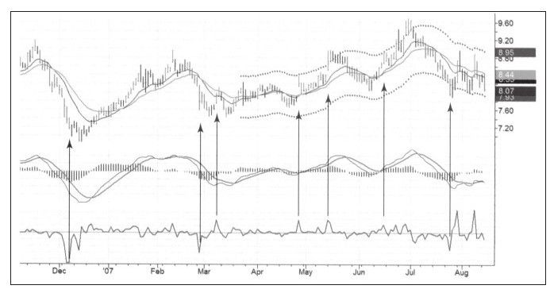
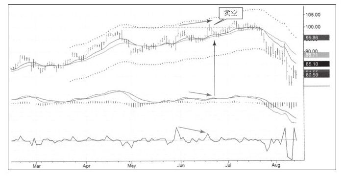

我们曾经讨论过做多的两个主要方式——价值型买入和动量型买入。做空时，不能简单鲁莽地使用这些方法，因为价格在顶或底及上升或下跌时市场参与者的心理不同，所以做多与做空也有很多不同。市场底部窄而短暂，顶部则宽而持久。
市场底部由恐惧组成，当多头不能再忍受亏损的压力时，他们以随意的价格卖掉股票，他们即将看到黎明，但亏钱的痛苦太过巨大让他们决定以任意价格出局。
恐惧和痛苦是尖锐而有力的情感，恐慌性抛盘将不坚定的多头洗出局，一旦他们出局，股价就开始重新上涨。其实，只要你不是贸然地买入并在底部惊慌失措地卖出，买入是比较自由的事情。
市场顶部的基础则是贪婪，赚钱的愉快情绪会持续很长一段时间。当看多者赚钱时，就算后来亏了钱，他们还是会建议朋友买入。所以顶部比底部更持久、形态更不规则，从图7-7中可以看到在上升趋势中，FI指标的尖角上涨并不意味着顶部的到来，而往往是上涨趋势的中继。

市场的底部在图表中容易找到，但市场的顶部持续时间较长，且由于过多假突破而难以辨识下跌开始的那个顶。只要看多者找到资金，他们就投入到市场中，于是市场就出现了很多看起来像顶部的顶。这种简单的向上假突破在市场顶部非常典型。
图7-8来自我的交易日记，我在6月份做空RL，之后股价上演了一次向上假突破并伴随着大量的顶背离。我认为假突破已经为下跌扫清障碍，但下跌来得很缓慢。在股价暴跌之前，价格又涨到了较高的位置，这非常考验交易者的耐心。股价就像一只中箭的牛，仍然在做最后的挣扎。
市场顶部的这种行为使得做空比做多更困难，顶部做空时需要更宽的止损，增加了每股的风险值，但如果使用紧随性止损，你遭受双重打击的风险将大大增加。

下一节继续讨论一些重要的做空机会及风险。